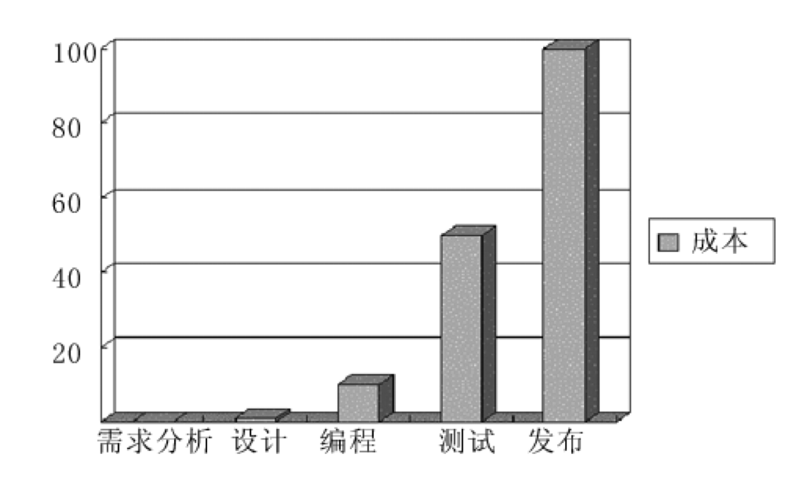
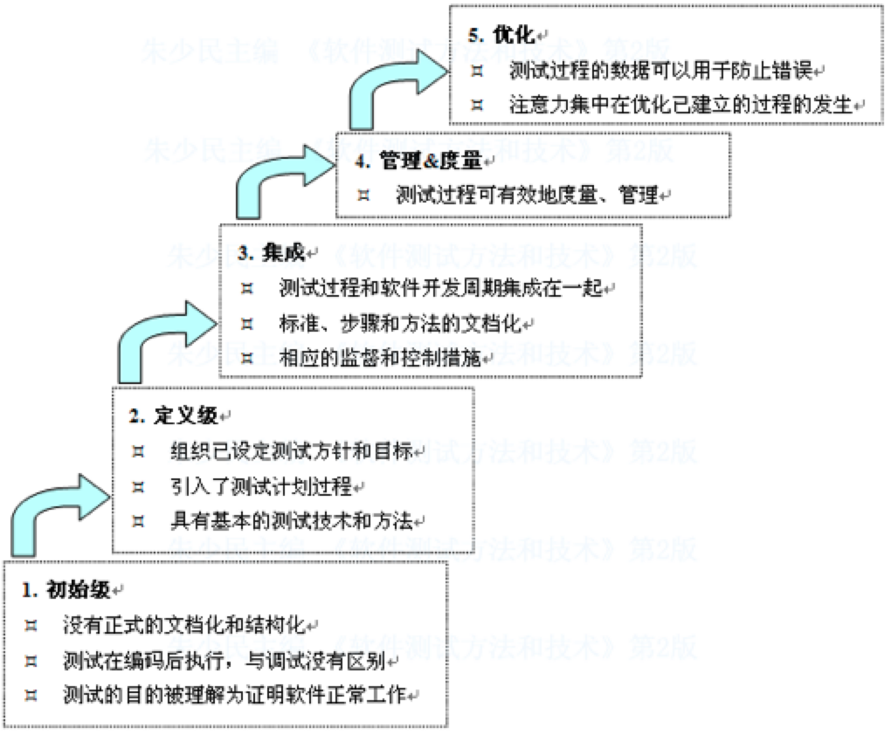

软件测试复习笔记
软件测试复习笔记
一、引论
为什么进行软件测试
- 产品质量的保证
- 控制成本的关键
- 软件可靠性确认
- 让企业具备国际竞争的实力
什么是软件测试
1、正向思维——验证软件正常工作：
- 软件测试就是为程序能够按预期设想那样运行而建立足够的信心
- “软件测试是一系列活动以评价一个程序或系统的特性或能力并确定是否达到预期的结果”
- 测试是为了验证软件是否符合用户需求，即验证软件产品是否能正常工作
2、反向思维——假定软件有错误：
- 测试是为了证明程序有错，而不是证明程序无错误
- 一个好的测试用例是在于它能发现至今未发现的错误
- 一个成功的测试是发现了至今未发现的错误的测试
Chat老师：
在软件测试中，正向思维和逆向思维是两种测试方法，它们的主要区别在于测试的目的和方法。正向思维是指测试人员按照预期的功能和需求来测试软件，而逆向思维则是从不符合预期的情况出发，测试来发现软件中的缺陷和漏洞。
虽然正向思维和逆向思维在过去被广泛使用，但现在它已经不再流行的原因是因为它们存在一些缺陷和局限性。正向思维只能测试软件的预期功能而无法发现软件中的潜在问题和漏洞。逆向思维虽然可以发现软件中的缺陷和漏洞，但它往往需要更多的时间和资源，并且测试结果可能不够全面和准确。
现在，软件测试更加注重全面性和深度性，测试人员更倾于使用更加综合和全面的测试方法，例如基于风险的测试、探索性测试和自动化测试等。这些测试方法可以更好地发现软件中的问题和漏洞，并且可以更加高效地进行测试。
3、软件测试定义
- 软件测试是由“验证（Verification）”和“有效性确认（Validation）”活动构成的整体
- “验证”是检验软件是否已正确地实现了产品规格书所定义的系统功能和特性
- “有效性确认”是确认所开发的软件是否满足用户真正需求的活动
4、软件测试的导向
- 以功能验证为导向，测试是证明软件是正确的（正向思维）
- 以破坏性检测为导向，测试是为了找到软件中的错误（逆向思维）
- 以质量评估为导向，测试是提供产品的评估和质量度量
- 以缺陷预防为导向，测试是为了展示软件符合设计要求，发现缺陷、预防缺陷
5、软件测试的学派
- 分析学派：分析学派认为软件测试是逻辑性的，将测试看作计算机科学和数学的一部分
- 标准学派：标准学派认为软件测试是用于衡量进度的一种方式，是对产品需求的确认，每个需求需得到验证
- 质量学派：质量学派强调过程，测试就是过程的质量控制，揭示项目的质量风险之活动
- 上下文驱动学派：上下文驱动学派强调人的能动性和启发性测试思维，使用探索式测试
- 敏捷学派：敏捷学派使用软件测试来验证开发是否完成，强调自动化
软件测试与软件开发的关系
1、V模型和W模型
软件开发中的V模型是一种延伸自瀑布模型的软件开发过程，是通用V模型的一个例子。V模型的软件开发不是以直线的方式进行，其过程在源代码阶段之前逐步往下，而在源代码阶段之后逐步往上，形成了V字形。V模型指出了软件开发中的各阶段以及其对应软件测试阶段之间的关系。横轴表示时间或是专案的完成度，而纵轴表示抽象的程度（范围越大，越抽象的在越上方）。
W模型，由Evolutif公司提出， 相对于V模型，W模型增加了软件开发各阶段中同步进行的验证和确认活动。如图所示，由两个V字型模型组成，分别代表测试与开发过程，图中明确表示出了测试与开发的并行关系。
2、软件测试与质量保证的关系
- 软件质量保证（Software Quality Assurance，SQA）活动是通过对软件产品有计划的进行评审和审计来验证软件是否合乎标准的系统工程，通过协调、审查和跟踪以获取有用信息，形成分析结果以指导软件过程。
- SQA指导、监督软件测试的计划和执行，督促测试工作的结果客观、准确和有效，并协助测试流程的改进。
软件测试是SQA重要手段之一，为SQA提供所需的数据，作为质量评价的客观依据。
SQA是一项管理工作，侧重于对流程的评审和监控
测试是一项技术性的工作，侧重对产品进行评估和验证
二、软件测试的基本概念
软件缺陷定义
标准定义：
- 从产品内部看，软件缺陷是软件产品开发或维护过程中所存在的错误、毛病等各种问题
- 从外部看，软件缺陷是系统所需要实现的某种功能的失效或违背
缺陷产生的原因
- 技术问题：算法错误、语法错误、计算和精度问题、接口参数传递不匹配（结果规格说明书是软件缺陷出现最多的地方）
- 软件本身：文档错误、强度或负载问题、不完善的软件开发标准
- 团队工作：沟通不充分、团队文化问题
修复软件缺陷的代价

平均而言，如果在需求阶段修正一个错误的代价是1，那么，在设计阶段就是它的3～6倍，在编程阶段是它的10倍，在内部测试阶段是它的20～40倍， 在外部测试阶段是它的30～70倍，而到了产品发布出去时，这个数字就是40～1000倍，修正错误的代价不是随时间线性增长，而几乎是呈指数增长的。
测试结束的标准
- 用例全部测试
- 覆盖率达到标准
- 缺陷率达到标准
- 其他指标达到标准
软件测试的分类
静态测试和动态测试：
- 静态测试包括对软件产品的需求和设计规格说明书的评审、对程序代码的复审以及静态分析等。静态分析的查错和分析功能是其他方法所不能替代的，可以采用人工检测和计算机辅助静态分析手段进行检测，但越来越多地采用工具进行自动化分析。
- 互查
- 走查：采用讲解、讨论和模拟运行的方式进行的查找错误的活动
- 评审：以会议形式，制定目标、流程和规则，按缺陷检查表（不断完善）逐项检查
- 动态测试是通过真正运行程序发现错误，通过观察代码运行过程，来获取系统行为、变量实时结果、内存、堆栈、线程以及测试覆盖度等各方面的信息，来判断系统是否存在问题，或者通过有效的测试用例，对应的输入输出关系来分析被测程序的运行情况，来发现缺陷。
- 驱动模块：对底层或子层模块进行测试所编写的调用这些模块的程序
- 桩模块：对顶层或上层模块进行测试时所编写的替代下层模块的程序
软件测试的工作范畴
- 软件测试工作的组织与管理：制定测试策略、测试计划，确认所采用的测试方法与规范，控制测试进度，管理测试资源。
- 测试工作的实施：编制符合标准的测试文档，搭建测试环境，开发测试脚本、与开发组织协作实现各阶段的测试活动。
三、软件测试的方法
白盒测试的概念
白盒测试也称结构测试或逻辑驱动测试，它是按照程序内部的结构测试程序，通过测试来检测产品内部动作是否按照设计规格说明书的规定正常进行，检验程序中的每条通路是否都能按预定要求正确工作。
黑盒测试的概念
黑盒测试也称功能测试，它是通过测试来检测每个功能是否都能正常使用。在测试中，把程序看作一个不能打开的黑盒子，在完全不考虑程序内部结构和内部特性的情况下，在程序接口进行测试，它只检查程序功能是否按照需求规格说明书的规定正常使用，程序是否能适当地接收输入数据而产生正确的输出信息。黑盒测试着眼于程序外部结构，不考虑内部逻辑结构，主要针对软件界面和软件功能进行测试。
什么是测试用例
为某个特殊目标而编制的一组测试输入、执行条件以及预期结果，以便测试某个程序路径或核实是否满足某个特定需求。指对一项特定的软件产品进行测试任务的描述，体现测试方案、方法、技术和策略。内容包括测试目标、测试环境、输入数据、测试步骤、预期结果、测试脚本等，并形成文档。
为什么要设计测试用例
- 测试用例构成了设计和制定测试过程的基础。
- 测试的“深度”与测试用例的数量成比例。由于每个测试用例反映不同的场景、条件或经由产品的事件流，因而，随着测试用例数量的增加，对产品质量和测试流程也就越有信心。判断测试是否完全的一个主要评测方法是基于需求的覆盖，而这又是以确定、实施和/或执行的测试用例的数量为依据的。
- 测试工作量与测试用例的数量成比例。根据全面且细化的测试用例，可以更准确地估计测试周期各连续阶段的时间安排。
- 测试设计和开发的类型以及所需的资源主要都受控于测试用例。
- 测试用例通常根据它们所关联关系的测试类型或测试需求来分类，而且将随类型和需求进行相应地改变。最佳方案是为每个测试需求至少编制两个测试用例：即正面用例（证明该需求已满足）和负面用例（只有在所需条件下才能满足该需求）。
- 测试用例是软件测试的核心。
白盒测试方法的分类
语句覆盖：语句覆盖法的基本思想是设计若干测试用例，运行被测程序，使程序中的每个可执行语句至少被执行一次
判定覆盖：判定覆盖法的基本思想是设计若干用例，运行被测程序，使得程序中每个判断的取真分支和取假分支至少经历一次，即判断真假值均曾被满足
条件覆盖：条件覆盖的基本思想是设计若干测试用例，执行被测程序以后，要使每个判断中每个条件的可能取值至少满足一次。
判定-条件覆盖：判定覆盖和条件覆盖的交集，即所有条件可能取值至少执行一次，同时所有判断的可能结果至少执行一次。
条件组合覆盖：每个判定中条件结果的所有可能组合至少出现一次。
基本路径覆盖：设计所有的测试用例，来覆盖程序中的所有可能的执行路径。如果一种方法都不能完全覆盖所有测试用例，力求最高的覆盖率。
基本路径覆盖方法：
根据代码绘制流程图
确定流程图的圈复杂度
确定线性独立路径的基本集合
设计测试用例覆盖每条基本路径
圈复杂度 V(G) = 区域数量 = 连线数量 - 节点数量 + 2 = 判定节点数量 + 1
独立路径：和其他独立路径相比，至少引入一个新处理语句或一个新判断的程序通路（独立路径必须包含一条在定义之前不曾用到的边）。V(G) 值正好等于该程序的独立路径的条数。
Chat老师：为什么需要求环路复杂度？
它可以帮助测试人员确定需要执行的测试用例数量，确保程序的所有路径都被覆盖到；另外，环路复杂度还可以帮助测试人员确定程序中的复杂度。程序的复杂度越高，就越难以测试维护。
黑盒测试方法的分类
等价类划分法（等价分类法）：分为有效等价类和无效等价类。有效等价类是有意义的、合理的输入数据，可检查程序是否实现了规格说明中所规定的功能和性能。无效等价类与有效等价类的意义相反。
边界值分析法：确定边界情况（输入或输出等价类的边界）、选取正好等于、刚刚大于或刚刚小于边界值作为测试数据
因果图法
判定表法
用条件覆盖法设计白盒测试用例
用等价类和边界值设计黒盒测试用例
以上设计测试用例的方法一定要掌握
有限自动机
有限状态机FSM是对象行为建模的工具，以描述对象在其生命周期所经历的状态序列，以及如何响应来自外界的各种事件。
拓展有限状态机EFSM是在FSM基础上增加了动作和转移条件，以处理系统的数据流问题。EFSM增加一个初始状态，并把状态转移函数、输出函数变为变量集合、转移集合。
以电梯为例的EFSM：
一个堆栈的状态图：
状态表：
状态生成树：
四、软件测试流程与规范
基于脚本测试和探索式测试
基于脚本的测试（ST）是先设计后执行，分为：分析、设计、执行、报告，阶段性明显，属于较传统的测试方式。
探索式测试（ET）强调测试学习，设计和执行同时展开。没有测试用例，一边想（设计）一边测试。
使用ET的原因：
- 开发人员多、测试人员少，测试更关注效率
- 整个开发节奏很快，测试要跟上这个节奏
- 测试时间很少，需要快速完成测试
- 对产品或业务不够熟悉，需要操作或使用它来熟悉
- 产品某些部分复杂，需要不断探索，才能很好地完成测试
| ST | ET |
|---|---|
| 系统性强，容易管理 | 高效率，适应性强 |
| 设计在先、执行在后 | 执行和思考并行 |
| 验证自己的思路，有可预见性 | 不断问系统，是学习的过程 |
| 关注需求和测试文档，有明确的测试标准，强调评审、可控 | 强调个人能力，关注与产品的交互 |
| 严谨、规范 | 拥抱变化、乐趣 |
TMMi（Testing Maturity Model integration）
是一种软件测试成熟度模型，它提供了一种评估和改进组织测试过程的方法。过程能力描述了遵循一个软件测试过程可能达到的预期结果的范围。TMMi的建立，得益于以下3点：
- 充分吸收CMM的精华
- 基于历史演化的测试过程
- 业界的最佳实践
TMM的五个级别：

TPI（Test Process Improvement）
测试过程改进是基于连续性表示法的测试过程改进的参考模型，是在软件控制、测试知识以及过往经验的基础上开发出来的。
CTP（Critical Test Process）
关键测试过程是一个内容参考模型、上下文相关的方法，并能对模型进行裁剪。使用CTP的过程改进，始于对现有测试过程的评估，通过评估以识别过程的强弱，并结合组织的需要提供改进的意见。具体分为：计划、准备、执行和完善。
STEP（Systematic Test and Evaluation Process）
系统化测试和评估过程是一个内容参考模型，认定测试是一个生命周期活动，在明确需求后开始直到系统退役。
TMap（Test Management Approach）
测试管理方法是一种结构化的、基于风险策略的测试方法体系，目的能更早地发现缺陷，以最小的成本、有效地、彻底地完成测试任务，以减少软件发布后的支持成本。
TMap所定义的测试生命周期由计划和控制、准备、说明、执行和完成等阶段组成。
五、单元测试与集成测试
单元测试的概念
定义：单元测试是对软件基本的组成单元（如函数、类的方法）进行的测试。
时机：单元测试和编码同步进行，但在TDD中，强调测试在先，编码在后。一般由开发人员完成，QA人员辅助。
原因：尽早发现错误；检查代码是否符合设计和规范，有利于将来代码的维护。
目标：单元模块被正确编码，验证代码与软件系统设计的一致性
- 对单元的代码规范性，正确性，安全性等进行验证
- 信息能否正确地流入和流出单元
- 在单元工作过程中，其内部数据能否保持其完整性，包括内部数据的形式、内容及相互关系不发生错误，全局变量在单元中的处理和影响
- 为限制数据加工而设置的边界处，能否正确工作
- 单元的运行能否做到满足特定的逻辑覆盖
- 单元中发生错误，其中的出错处理措施是否有效
- 指针是否被错误引用，资源是否及时被释放
- 有无安全隐患？是否使用了不恰当的字符串处理函数
依据：《软件需求规格说明书》《软件详细设计说明书》
测试任务：
- 独立路径的测试：检查每一条独立执行路径的测试，并保证每条语句被至少执行一次。
- 局部数据结构：检查局部数据结构完整性
- 单元接口：检查模块接口是否正确
- 边界条件：检查临界数据处理的正确性
- 容错性测试：预设的各种出错处理是否正确有效
- 内存分析
测试是为了发现软件中存在的错误而执行程序的过程，而调试是定位错误并修改程序以修正错误的过程。
集成测试的概念
定义：集成测试是将软件集成起来，对模块之间的接口进行测试。
- 模块内的集成，主要是测试模块内各个接口间的交互集成关系；
- 子系统内的集成，测试子系统内各个模块间的交互关系；
- 系统内的集成，测试系统内各个子系统和模块间的集成关系。
集成测试的模型：非渐增式测试模式与渐增式测试模式
- 非渐增式测试模式：先分别测试每个模块，再把所有模块按设计要求放在一起结合成所要的程序，如大棒模式。
- 渐增式测试模式：把下一个要测试的模块同已经测试好的模块结合进来进行测试，测试完后再把下一个应该测试的模块结合起来测试。渐增式测试又可以根据每次添加模块的路线分为自顶向下测试、自底向上测试和混合测试等方式。
三明治集成，中上层自顶向下，中下层自底向上。
采用三明治方法的优点是：它将自顶向下和自底向上的集成方法有机地结合起来，可以少写桩程序或驱动程序。
采用这种方法的主要缺点是：在真正集成之前每一个独立的模块没有完全测试过。
依据：《软件概要设计说明书》（主要）、《软件详细设计说明书》
六、系统测试
系统测试的概念
系统测试（特征测试）：检验系统所有元素之间协作是否合适，整个系统的性能和功能是否达到要求。其测试内容包括：功能测试，非功能测试与回归测试等。
测试人员：软件测试工程师
测试依据：需求说明书，概要设计说明书，详细设计说明书，最重要的是需求说明书。
功能、回归、性能测试
功能测试：根据产品规格说明书，验证被测试的系统是否满足各方面的使用要求。测试的要点是：功能逻辑清楚，符合使用者习惯、系统的各种状态按照业务流程而变化，并保持稳定、每项功能符合实际要求。
回归测试：为保证软件中新的变化(新增加的代码、代码修改等)不会对原有功能的正常使用有影响而进行的测试。也就是说，满足用户需求的原有功能不应该因为代码变化而出现任何新的问题。
性能测试：就是为了发现系统性能问题或获取系统性能相关指标而进行的测试。一般在真实环境、特定负载条件下，通过工具模拟实际软件系统的运行及其操作，同时监控性能各项指标，最后对测试结果进行分析来确定系统的性能状况。主要的性能指标有：服务器的各项指标（CPU、内存占用率等）、后台数据库的各项指标、网络流量、响应时间。
性能测试的基本过程：
- 确定性能测试需求
- 选择测试工具和开发相应的测试脚本
- 建立性能测试负载模型：
- 确定并发虚拟用户数量，每次请求的数据量，思考时间，加载方式和持续加载的时间等
- 是个迭代完善的过程
- 执行测试
- 提交测试报告，进行分析
压力测试：也称负载测试(ioad testing)，用来检查系统在不同负载(如数据量、并发用户、连接数等)条件下的系统运行情况，特别是高负载、极限负载下的系统运行情况，以发现系统不稳定、系统性能瓶颈、内存泄漏、CPU 使用率过高等问题。
确认测试：确认测试又称有效性测试。有效性测试是在模拟的环境下，运用黑盒测试的方法，验证被测软件是否满足需求规格说明书列出的需求。任务是验证软件的功能和性能及其他特性是否与用户的要求一致。对软件的功能和性能要求在软件需求规格说明书中已经明确规定，它包含的信息就是软件确认测试的基础。
其他非功能性测试
软件安全性测试：全面检验软件在需求规格说明中规定的防止危险状况措施的有效性和在每一个危险状态下的反应，对软件设计中用于提高安全性的结果，算法，容错，冗余，中断处理等方案进行针对性测试，并对安全性关键的软件单元和软件部件，单独进行加强的测试，以确认其满足安全性需求。
容错性测试：检查软件在异常条件下自身是否具有防护性的措施或者某种灾难性恢复的手段。
兼容性测试: 验证软件之间是否正确地交互和共享信息。
七、验收测试
验收测试的概念
验收测试：在软件产品完成了系统功能和非功能测试之后、产品发布之前所进行的软件测试活动，它是技术测试的最后一个阶段，也称为交付测试。检查软件是否符合合同要求，包括需求规格说明、设计规格说明和用户手册等。
测试人员：用户和测试部门
测试依据：国家规范、行业标准、合同条款、用户确认的需求规格说明书（需求规格说明书在初稿完成至编程之前评审，在验收期间进行验证？？？）
测试内容：和用户一起来验收软件系统，在真实环境下运行软件系统，看是否存在和用户要求不一致的问题，或违背产品规格的要求；发现测试人员不能预见的问题。
验收结果：验收报告，也称为发布报告。
α/β测试
α测试是指软件开发公司组织内部人员模拟各类用户行对即将面市软件产品（称为α版本）进行测试，试图发现错误并修正。经过α测试调整的软件产品称为β版本。
β测试是指软件开发公司组织各方面的典型用户在日常工作中实际使用β版本，并要求用户报告异常情况、提出批评意见。然后软件开发公司再对β版本进行改错和完善。
测试内容
文档测试：主要检查文档的正确性、完备性、易理解性、一致性。好的文档能达到提高易用性、提高可靠性、降低技术支持费用的目的，从而提高了产品的整体质量。
可用性测试：保证用户界面符合标准和规范、直观性、一致性、灵活性、舒适性、正确性、实用性。没有量化标准，主观性强。
可安装性测试：（安装过程是否顺利）
可恢复性测试：当系统出错时，能否在指定时间内修正错误或重新启动系统。
兼容性测试：软件兼容性测试、数据共享兼容性测试、硬件兼容性测试
八、国际化和本地化测试
软件本地化和国际化
软件国际化：I18N是借助功能设计和代码实现中软件系统有能力处理多种语言和不同文化，使创建不同语言版本时，不需要重新编写代码的软件工程方法。
软件本地化：L10N是将一个软件产品按特定国家/地区或语言市场的需要进行加工，使之满足特定市场上的用户对语言和文化的特殊要求的软件生产活动。
I18N是L10N的基础和前提，为L10N做准备
L10N是I18N向特定本地语言环境的转换
G11N (globalization)= I18N + L10N
I18N 是软件产品源语言开发的一部分，属于Engineering
L10N 可以独立于Engineering，可由第三方完成
软件本地化测试
- 功能性测试，所有基本功能、安装、升级等测试；
- 可用性测试，包括用户界面、度量衡和时区等；
- 兼容性调试，包括硬件兼容性、版本兼容性等测试；
- 翻译测试，包括语言完整性、术语准确性等的检查；
- 文化、宗教、喜好等适用性测试
- 手册验证，包括联机文件、在线帮助、PDF文件等测试
九、软件测试自动化
测试自动化的内涵
自动化测试（automated test）是相对手工测试而存在的一个概念，由手工逐个地运行测试用例的操作过程被测试工具自动执行的过程所代替。
测试工具的使用是自动化测试的主要特征。
自动化测试焦点集中在测试执行，主要是由测试工具自动地完成测试。
测试自动化指“一切可以由计算机系统自动完成的测试任务都已经由计算机系统或软件工具、程序来承担并自动执行”。
测试自动化意味着测试全过程的自动化和测试管理工作的自动化
测试自动化实现的原理
代码分析：类似于高级编译系统，在工具中定义类/对象/函数/变量等定义规则、语法规则等，在分析时对代码进行语法扫描，找出不符合编码规范的地方。
对象识别（Windows 对象 、Mac 对象、Web DOM对象）
脚本技术：线性脚本、结构化脚本、数据驱动脚本、关键字驱动脚本
自动比较技术：静态比较和动态比较，简单比较和复杂比较，敏感性测试比较和健壮性测试比较，比较过滤器
测试自动化系统的构成：测试工具的分类、测试工具的选择、测试自动化普遍存在的问题、自动化测试的引入和应用
测试自动化的实施
测试工具的分类：根据测试方法，分为黑盒测试工具、白盒测试工具、静态测试工具和动态测试工具；根据来源，分为开源测试工具、商业测试工具、自主研发测试工具和第三方测试工具；根据测试的对象，分为单元测试工具、功能测试工具、性能测试工具、测试管理工具。
测试工具的选择
测试自动化普遍存在的问题：不正确的观念或不现实的期望、测试工具本身的问题影响测试的质量、测试脚本的质量低劣等等。
自动化测试的引入和应用：
- 找准测试自动化的切入点
- 把测试开发纳入整个软件开发体系
- 测试自动化依赖测试流程和测试用例
- 软件测试自动化的投入较大
- 进行资源的合理调度
自动化测试工作流程
- 计划（收集测试信息）：收集测试信息，计划自动化测试
- 创建（建立基本测试）：记录用户操作形成基本测试
- 核实和提高（提高基本测试）：对回放和测试提高自动化测试
- 整合（整体测试）：运行多种测试检查数据流
自动化测试框架
性能测试工具LoadRunner组件：
- 虚拟用户发生器（Visual User Generator，VuGen）
- 控制器（Controller）
- 负载发生器（Load Generators）
- 分析器（Analysis）
LoadRunner工作过程：
①通过VuGen来设计脚本
②通过Control设计场景
③通过负载发生器实现虚拟用户并发执行
④通过Control监控场景
⑤通过分析器分析结果
功能测试工具QTP：
- 录制测试脚本：对象识别
- 编辑测试脚本：加验证点，优化脚本
- 调试脚本
- 执行：验证
- 结果分析：确定缺陷